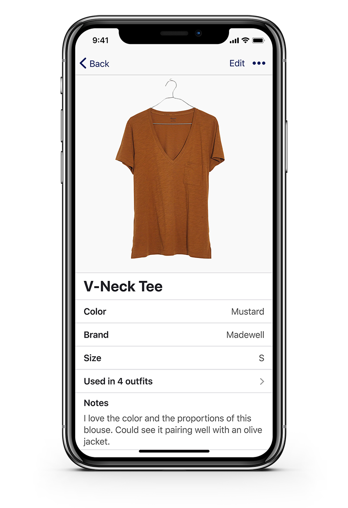

Wardrobe - curating personal style
For anyone who’s ever rummaged through their closet and felt like they had nothing to wear.
With the ability to inventory clothing, create outfits, and save style inspiration, users can feel confident in their personal style and dress for success — whatever success means to them.
See Prototype Design Roles
- UX Design
- Visual Design
- Brand & Identity
Deliverables
- Competitive Analysis
- User Surveys
- User Personas
- User Stories & Flows
- Wireframes
- User Testing
- Brand Identity
- Visual Design
- High Fidelity Prototype
Tools
- Figma
- Lucidchart
- InVision
- Maze
- Google Forms
The Problem
What to wear is never really taught - it’s just something people pick up (or don’t pick up) along the way. Individuals who didn’t pick it up are then thrown into many different social situations they’re unprepared for and are at a loss as to what to wear.
Young professionals, in particular, often find managing their wardrobes challenging. Many are still in the process of discovering their personal style, while navigating the world of professional dress codes for the first time. They struggle to strike the balance between expressing individualism and blending in with their environment. How can Wardrobe help these users?
The Solution
The Wardrobe app alows users to track their clothes in a virtual closet, create new outfits and track outfits worn, and save style inspiration. It encourages users to be intentional about what they wear, how they organize their clothing, and how they present themselves to the world. Wardrobe doesn’t push any individual styles or trends, but encourages users to experiment and figure out what works for their lifestyle.
"There is no roadmap to style. It's about self-expression, and, above all, attitude."-Iris Apfel
Research and Discovery
Competitive Analysis
Because Wardrobe a cloud organization tool that helps users manage their wardrobes, I studied a mix of popular cloud products and style apps. If I were to do this again I would study one more style-specific app.
The ideal wardrobe management app has:
- Pinterest’s rich visual content
- Evernote’s robust notetaking features
- Stylebook’s domain-specific features
Read my entire competitive analysis here.
I also studied critical reviews of lesser-known wardrobe management apps on the App Store:
When I try to create an outfit, it doesn’t let me press the check mark button to finish the outfit. Also, you can’t edit the outfits!
Seems like an amazing concept, but please let guys try too
Not to mention the fact that they make it so hard to find specific clothing items and when you search for them it just comes up with nothing
User Survey
To learn more about Wardrobe’s potential users and their frustrations with managing clothing, I conducted a survey on Google Forms. There were over 90 responders.
70% of survey participants reported having felt frustrated with their clothing, agreeing with the statement “I often feel like I have plenty of clothes but nothing to wear”.
79% keep track of their wardrobes mentally or not at all.
81% said they would be interested in trying a digital product that helps them plan and track their wardrobes.
95% would prefer to access such digital wardrobe content on mobile.
User Personas
I conducted follow-up interviews with several of the survey participants to obtain more qualitative data about Wardrobe’s potential users. Through these discussions, I gained valuable insight that allowed me to develop three user personas for reference throughout the design process. Check out the personas here.


Main Insights
Frustrations with clothing and figuring out what to wear are prevalent. 81% of responders were willing to try a product like Wardrobe.
A resounding majority would prefer this type of product to be a mobile app.
The major needs for a product like Wardrobe are to track individual clothing items, save fashion inspiration, take notes on style choices, and experiment with outfits.
Information Architecture
User Stories and User Flows
After studying Wardrobe’s competitors and talking to potential users, I had learned enough to create user stories, all of which you can read here. These user stories helped me prioritize product features as I moved forward in the design process. I then mapped out user flows for Wardrobe’s highest priority user stories. Check them out up close here.


Low Fidelity Wireframes
I now understood enough about user goals to begin wireframing what this product might look like. I began by sketching my ideas for Wardrobe’s screens on paper.
I then built digital wireframes with Figma. Throughout the wireframing process I regularly referred back to Apple’s Human Interface Guidelines to make sure I was designing a great user experience for an iOS app.
I used a card-based design because it chunks content for quick scannability and allows the image-based content to be the user’s main focus. It also mapped well with how users thought about organizing their physical clothing. Each piece of clothing had its own place in a specific drawer or closet. Each drawer contains clothing that all have similar defining attributes.


Main Insights
In building the user flows, I discovered that the user needs for this product fall into three major categories - organizing clothing, managing outfits, and saving inspiration. Thus, clothing, outfits, and inspiration became the basis for the app architecture.